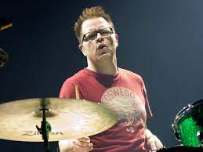

Rivers Cuomo is an American musician, singer, songwriter, and producer. He is the lead vocalist, guitarist, pianist, and songwriter of the rock band Weezer. Raised on an ashram in Connecticut until age 10, Cuomo moved to Los Angeles at 18, where he played in several rock bands before forming Weezer in 1992.

Patrick George Wilson is an American musician, singer, and songwriter. He is best known as the drummer and co-founding member of the rock band Weezer, with whom he has recorded fifteen studio albums. In addition to his work in Weezer, Wilson also fronts his own band, The Special Goodness.
Matthew Kelly Sharp is an American songwriter and musician. Until 1998, he was the bassist for the alternative rock band Weezer, which he cofounded in 1992. He appears on their first two albums, the Blue Album and Pinkerton. In 1994, Sharp founded the Rentals, who have released four albums.
Jason Rosanoff Cropper is an American musician. He was a founding member and the guitarist of American alternative rock band Weezer. He left the band before the release of their debut album Weezer.